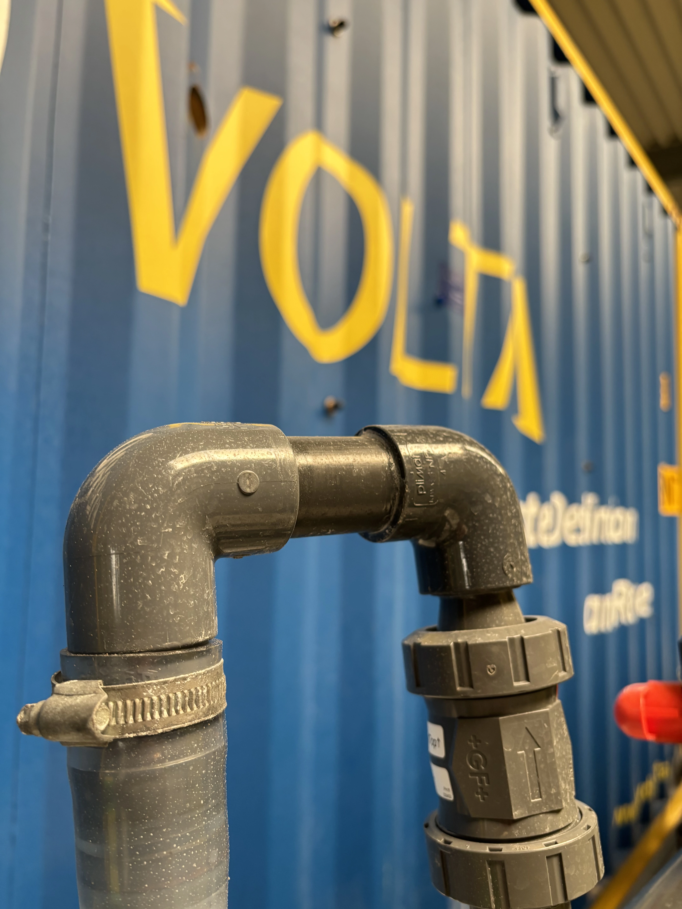

Agriculture and livestock
Brackish wells, hard water, irrigation reliability and livestock water quality.
HydroVolta should target buyers who control a brackish groundwater source or a concentrated brine stream and have a concrete technical, regulatory or economic reason to act.

Brackish wells, hard water, irrigation reliability and livestock water quality.

Process water recovery, cooling water support and lower liquid discharge volumes.
Seawater intrusion, salinity, nitrate and public water resilience challenges.

Distributed water treatment where central infrastructure or trucking is expensive.

Brine valorization pilots for HCl, NaOH and selected mineral hydroxides.

Characterization, pilot separation and evaluation of recovery potential.
HydroVolta qualifies projects by source water, target use, flow capacity, discharge limits and brine chemistry. We will tell you if SonixED™ or a brine valorization pathway is not the right fit.